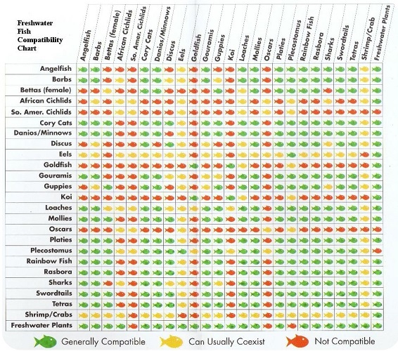

Taking care of fish can be a huge responsibility
and is something people assume is not that hard
until they actually try it.
I hope my website can provide you with some knowledge about pet fish
| Guppies | Swordtails | Tiger Barbs | Yellow Snails | |
|---|---|---|---|---|
| Guppies | Yes | Yes | Probably | Yes |
| Swordtails | Yes | Yes | Yes | Yes |
| Tiger Barbs | Probably | Yes | Yes | Yes |
| Yellow Snails | Yes | Yes | Yes | Yes |
According to the table above, there is a possibility my tigerbarbs and guppies might not get along with each other.
Both of them are relatively small tropical fish. But guppies often have beautiful long fins, and tiger barbs like to chase after and attack those.
In the worst-case scenario, guppies will die from the stress.
Every fish species has different personalities and habits.
They each prefer a different ph and temperature of their water, and a different magnitude of water stream.
Some of them like to fight, and some of them don't. Check the image below that shows who doesn't get along with whom.
Both of them are relatively small tropical fish. But guppies often have beautiful long fins, and tiger barbs like to chase after and attack those.
In the worst-case scenario, guppies will die from the stress.
Every fish species has different personalities and habits.
They each prefer a different ph and temperature of their water, and a different magnitude of water stream.
Some of them like to fight, and some of them don't. Check the image below that shows who doesn't get along with whom.

©Copyrights
I made a list of things on the left that you should be aware of especially as a new tropical fish caretaker.
Once you have spent some time playing (not physically, haha) around with your fish and fish tank setup,
You will want to start decorating your fish tank because it looks cool!
On top of taking care of your fish, creating a beautiful and comfy environment for them is also big fun.
You can find many cool fish tank decorating videos on YouTube to get some inspiration.
Check out this cool video below. But remember that you should always first know your fish and their preferred environment before you proceed further.
Once you have spent some time playing (not physically, haha) around with your fish and fish tank setup,
You will want to start decorating your fish tank because it looks cool!
On top of taking care of your fish, creating a beautiful and comfy environment for them is also big fun.
You can find many cool fish tank decorating videos on YouTube to get some inspiration.
Check out this cool video below. But remember that you should always first know your fish and their preferred environment before you proceed further.
Link to Original Video
© Copyrights Video by Foo the Flowerhorn